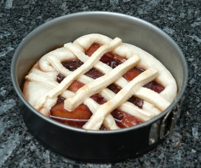

| Zutaten für 6 Personen: | |
| 250g | Kuchenteig |
| 350 g | Zwetschgen |
| 50 g | Rosinen |
| 100 g | Zucker |
| 1/2 Tasse | Rum |
| 1 | Zitronenschale |
| 1/2 Tasse | Rotwein |
Die Rosinen am Vortag im Rum einweichen.
Die entsteinten Zwetschgen in einer Pfanne mit den Rosinen, dem Wein, dem Wasser, dem Zucker und der Zitronenschale aufkochen und 15 Minuten auf kleiner Flamme köcheln lassen.
Bebuttern Sie eine Springform (22 cm) und kleiden sie diese mit dem Kuchenteig aus. Sie benötigen noch ein paar streifen Kuchenteig für die Dekoration.
Geben Sie das Pflaumenkompott in die Form und formen sie aus den Teigstreifen ein Gitter.
Im Ofen bei hoher Hitze (220 °?) 10 Minuten backen.
Anschliessend Hitze reduzieren und weitere 10 Minuten backen (150°?)
Herbert Eigenmann, Code: ZWA
Ist mir nicht optimal gelungen schmeckt aber vielversprechend (und süss). Das Rezept war noch auf Französisch und etwas unklar. Ich denke das Pack Kuchenteig sollte eher ein 250g Pack sein denn ein 500g Pack. Dann scheint mir es hätte auch mehr Zwetschgen vertragen also eher 300-400g. Bei den Flüssigkeiten habe ich aus dem Handgelenk gemessen und entsprechend ist der Sirup beim fertigen Produkt auch sehr flüssig raus gekommen. Vielleicht wird es beim nächsten mal besser. RE 18.10.2009
@LINKBACK_TAG@ @WAKELOCK@